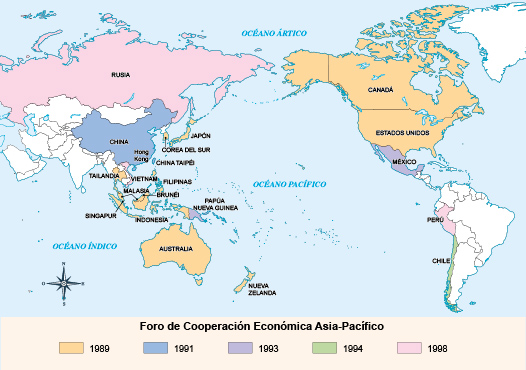
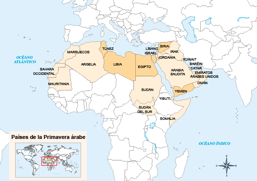
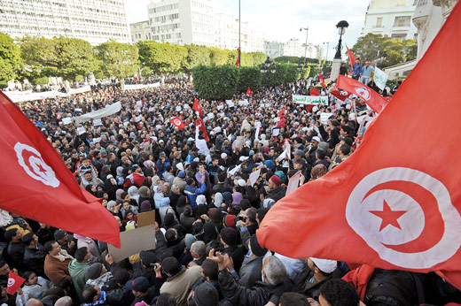
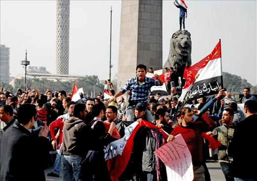
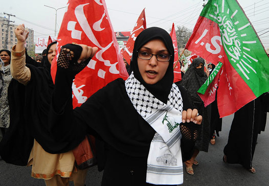
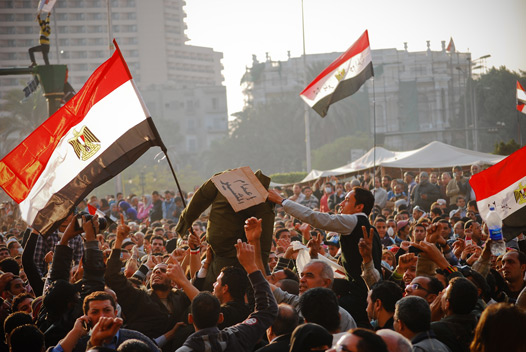

Al final del siglo XX y comienzos del XXI, Asia, especialmente los países que limitan con el Pacífico, hizo transformaciones políticas y económicas que la situaron a la vanguardia económica del mundo.
-
01
Conflictos y cooperación en Asia
Open or CloseChina y Japón, naciones ubicadas entre las cinco potencias económicas, son muestra de estas iniciativas. Sin embargo, junto al desarrollo económico y a la dinámica política, también se presentaron algunos problemas políticos y militares.
Las rivalidades entre Corea del Sur y Corea del Norte, la disputa por el estrecho de Taiwán entre la República Popular China y la República de China (Taiwán) y las escaramuzas por las islas Senkaku, entre China y Japón, indican la existencia de conflictos que pueden llegar a representar confrontaciones armadas entre potencias asiáticas, que además pordrían involucrar a las potencias occidentales, ya que Estados Unidos es aliado de Taiwán, Corea del Sur y Japón.

Seúl es oficialmente la capital de Corea del Sur desde 1948, pero su tradición como capital histórica de Corea se remonta a 600 años. Adicionalmente, es la ciudad más poblada de la península de Corea.
El conflicto entre la República Popular China y la isla de Formosa o Taiwán tiene como antecedente a la guerra del gobierno chino del Kuomintang contra Japón (1937-1945). Esta confrontación permitió una tregua en la guerra civil china que enfrentó al gobierno nacionalista con los rebeldes liderados por Mao Zedong.
Las islas Senkaku, llamadas en China islas Diaoyutai, hacen parte de Japón desde 1895, tras la victoria de este país en la Guerra Sino-Japonesa, y la imposición del Tratado de Shimonoseki a la China imperial. La validez de este acuerdo ha sido puesta en duda tanto por China como por Taiwán, y ambos países reclaman soberanía sobre este archipiélago a partir de la década del sesenta. La tensión en torno a las islas se ha agudizado a partir de 2012, cuando ocurrió una serie de incidentes que involucraron a las autoridades chinas y japonesas, como consecuencia de la cada vez mayor presencia de buques militares chinos en las aguas adyacentes al archipiélago.
Entre el dinamismo político y económico y los conflictos latentes, los expertos prevén tres escenarios. El primero destaca la integración económica, que implica una interdependencia entre los países de la región, esto significa que se necesitan unos a otros.
Un ejemplo de ello es la interdependencia entre las economías de China y Japón: China necesita de los desarrollos tecnológicos japoneses y de la estabilidad de la economía nipona; Japón requiere el gigante mercado chino y la mano de obra barata para volver más competitiva su producción.
Un escenario de integración, interdependencia y ayuda mutua es el Acuerdo Transpacífico de Cooperación Económica, tratado de libre comercio, tal como los de América Latina, que establece lazos de cooperación entre los países de la región.
Un segundo escenario lo constituye el latente enfrentamiento. Es el caso de Corea del Norte, que mantiene constantes provocaciones militares contra Japón, Corea del Sur, y por supuesto, Estados Unidos, herencia de la Guerra Fría.

Las cifras muestran el poderío militar de Corea del Norte y Corea del Sur. La presencia de dos ejércitos tan grandes y bien armados en la península coreana, y la rivalidad que mantienen, representa un peligro para la paz de ambos países y de sus vecinos.
Corea del Norte desde hace décadas desarrolla un programa nuclear en el que ha hecho varias pruebas con misiles, primero durante el mandato de Kim Jong-il y luego en el de su sucesor e hijo Kim Jong-un, lo que representa una amenaza para estos países, que han acudido a la diplomacia y a la imposición de sanciones económicas para evitar mayores hostilidades.
Kim Dae Jung (izquierda) junto a Kim Jong Il, junio de 2000. Desde la firma del Armisticio que puso fin a la Guerra de Corea, las dos Coreas se debaten entre las negociaciones y las escaramuzas militares. La carrera armamentista hace que una posible guerra entre las dos Coreas afecte no solo a la península sino al mundo.
En el escenario de conflicto, Estados Unidos identifica a Japón como su principal aliado en la región. Los Gobiernos nipones consideran que la presencia de militares estadounidenses en su territorio, en particular en la base militar de Okinawa, garantiza la seguridad y la estabilidad en esa área.
Panorámica de Taipéi en la que destaca el edificio Taipéi 101, considerado el más alto del mundo con 508 m de altura. Para los expertos, las disputas entre las potencias asiáticas no pasarán a mayores, entre otras razones porque la región mantiene un relativo equilibrio por la menor injerencia de los Estados Unidos en la zona, la pérdida de la hegemonía de Japón en el plano mundial y local, el ascenso de China como potencia y las continuas amenazas nucleares de Corea del Norte.
Un tercer escenario combina los dos anteriores, es decir, cooperación y conflicto. Este tiene en cuenta las crisis económicas por las cuales ha atravesado la región en diferentes periodos a finales del siglo XX y comienzos del XXI, y que han promovido políticas de seguridad y de cooperación como respuesta.
Para las culturas milenarias orientales, basadas en el confucianismo, la crisis significa tanto peligro como oportunidad, y sus dirigentes han mostrado gran habilidad para evitar el primero y promover la segunda, pues han tenido como objetivo mantener la armonía y la estabilidad basada en el equilibrio y el respeto a la autoridad.
Recuerda
El conflicto entre Taiwán y China ha pasado por tres momentos:
- Entre 1949 y 1978 las dos Chinas se enfrentaron en el marco de la Guerra Fría. Ello implicó bombardeos de China a posiciones de Formosa en 1958 y 1961.
- Entre 1979 y 1987 las dos Chinas resolvieron sus diferencias por medios diplomáticos.
- Luego de 1987 se iniciaron intercambios comerciales que crecieron cada vez más.
01.1El Foro de Cooperación Económica Asia-Pacífico (APEC)
El Foro, creado en 1989, reúne a 21 países de Asia entre los cuales destacan aquellos ubicados sobre el Pacífico y favorece el escenario de cooperación, integración e interrelación entre los miembros asiáticos, y entre estos y otras potencias con costas en el Pacífico, por ejemplo, Estados Unidos y Australia.
Las economías de los países que integran el Foro representan el 56 % del producto interno bruto (PIB) mundial. Los países miembros del Foro están unidos bajo el lema: "Comercio, más comercio y distensión política".
La suma del producto nacional bruto de las 21 economías que conforman el APEC equivale al 56 % de la producción mundial, en tanto que en su conjunto representan el 46 % del comercio global.
Para ello, promueven acuerdos de libre comercio tanto bilaterales como multilaterales. Estados Unidos y China son las dos potencias más interesadas en dicha iniciativa. Por otra parte, quienes lo integran impulsan políticas de distensión y acercamiento entre aquellos países que tienen disputas territoriales y políticas, como China y Japón.
Una de las medidas que lidera el Foro es la eliminación de las barreras arancelarias, con lo cual aumentan el intercambio y el comercio de bienes tecnológicos.
Estados Unidos y China, por ejemplo, acordaron rebajar a cero más de 200 impuestos aduaneros, lo cual incrementará los intercambios comerciales de 1000 millones de dólares a 4000 millones.
El Foro también promueve el acercamiento entre los Gobiernos de Japón y China para que lleguen a acuerdos sobre la disputa de las islas Senkaku, bajo control de Japón y que China reclama. En ese sentido, la segunda y tercera potencias económicas mundiales firmaron un acuerdo para iniciar la normalización de sus relaciones.
La Asociación de Naciones del Sudeste Asiático (ASEAN) ha fomentado la cooperación entre las principales economías de Asia, así como la coordinación de medidas financieras y políticas.
Por otro lado, la conformación del Acuerdo Transpacífico de Cooperación Económica (TPP), promovido por Estados Unidos, integra un bloque comercial que va desde Vietnam hasta Chile e incluye a Japón, y reúne más 800 millones de personas, que representan casi el 40 % de la economía mundial. Este acuerdo, firmado en febrero de 2016, no involucra las poderosas economías de China y Corea del Sur.
Frente al Acuerdo Transpacífico, China impulsa un área de Libre Comercio de Asia Pacífico (FTAAP), que no incluye a los Estados Unidos. En esta dirección, China firmó con Corea del Sur un pacto bilateral que reduce las barreras arancelarias de los dos países, excepto las del arroz y del sector de automóviles.
Otros acuerdos bilaterales son los firmados entre China y Rusia para ampliar el intercambio de gas. El acuerdo incrementará el flujo de gas de Rusia a China en 30 billones de metros cúbicos por lo menos durante 30 años, además de promover el proyecto conocido como Nueva Ruta de la Seda, que facilitaría la comunicación terrestre entre ambos países.
01.2China
La República Popular China es una potencia económica, comercial y militar en ascenso no solo en Asia, sino en el mundo. Es importante destacar cuáles son los derroteros de este país a finales del siglo XX y comienzos del XXI.
Shanghái, la capital socioeconómica de China, es la ciudad más poblada de ese país y una de las más pobladas del mundo, con más de 20 millones de habitantes.
- Indicadores económicos. Durante el último cuarto del siglo XX, China mantuvo crecimientos económicos que rondaban el 10 %. A comienzos del siglo XXI esta tasa disminuyó al 7 %, por lo cual se buscó la creación de más de 10 millones de empleos urbanos en el sector de servicios, el fortalecimiento del mercado interno y del consumo, y el ahorro de la clase media y trabajadora. El desempleo en la China de finales del siglo XX se mantuvo por debajo del 4,5 %.
- Defensa. El presupuesto de defensa aumentó en los últimos 25 años en 10 %, lo cual deja claro que al Gobierno le interesan unas fuerzas armadas fuertes, que garanticen la soberanía, la seguridad y preserven los intereses del país, particularmente en el mar de China Oriental.
Según el informe de 2007 del Banco de Construcción de China, el país se convirtió en una de las primeras potencias del mundo. Con un déficit que ronda el 2 % del PIB, el gobierno pretende aumentar la inversión en agricultura, silvicultura, reserva de alimentos, conservación del agua, sanidad y planificación familiar.
- Protección del medio ambiente. Uno de los problemas más álgidos que afectan a la población china es la calidad del aire. Las ciudades mantienen altas tasas de contaminación, que obligan a sus habitantes a utilizar protectores de boca y nariz. Además, el daño al ambiente por emisiones de dióxido de carbono, vertimiento de residuos tóxicos en las fuentes de agua y la inadecuada disposición de los residuos sólidos, ha llevado al Gobierno a tomar medidas para frenar y castigar con severidad a los infractores. Asimismo, para contrarrestar los daños se incentiva el uso de energías alternativas, como la solar y la eólica.
Recuerda
Lucha contra la corrupción
La campaña contra la corrupción en China ha llevado a la cárcel a más de 80.000 funcionarios en los últimos años. La política del Gobierno es desestimular prácticas deshonestas en el Partido Comunista.
01.3Consolidación
Actividades para consolidar lo que has aprendido en esta sección.
-
02
La Primavera árabe
Open or CloseEntre 2010 y 2011, movimientos sociales de diferentes países ubicados en el norte de África y Oriente Medio, con tradición musulmana, organizaron una serie de marchas y protestas sociales con el fin de acabar con dictaduras o Gobiernos que no garantizaban los derechos civiles. Este movimiento se conoció como la Primavera árabe.
La Primavera árabe comenzó como una serie de protestas populares en Túnez, pero en varios países las manifestaciones crecieron sistemáticamente y el alzamiento civil adquirió grandes proporciones, conduciendo a insurrecciones armadas en países como Siria, Yemen y Libia, las cuales se prolongan hasta el día de hoy.
Un efecto importante de los levantamientos populares fue el derrocamiento de dictaduras en: Túnez, Yemen, Egipto y Libia.
Las monarquías árabes, temerosas de que la ola democrática llegara a sus países, tomaron medidas para contrarrestar su avance.
02.1Túnez
Luego de las manifestaciones que derrocaron al presidente Zine el Abidine Ben Ali en 2011, en las elecciones convocadas venció el partido islamista Ennahda, que gobierna Túnez en coalición con dos partidos laicos.
La amenaza más grave de esta situación son las actividades de una minoría islamista radical, a la que se le atribuye el asesinato del político laico Chokri Belaid y el atentado contra el Museo Nacional del Bardo en 2015, así como numerosos incidentes armados en las zonas rurales ubicadas al sur de ese país.
Durante más de veinte años, Túnez estuvo bajo la dictadura de Zine el Abidine Ben Ali caracterizada por una violenta represión, corrupción política, malversación de fondos públicos y violación a los derechos humanos. En 2010, ante la ola de manifestaciones, se produjo la fuga del dictador, sobre quien pesa una orden de detención internacional y una condena de 66 años de prisión.
02.2Yemen
Hacia 1970, en el norte del territorio yemenita se institucionalizó un gobierno progresista con una Constitución que integró los principios del islam, con otros de la cultura occidental como el respeto a las libertades individuales y a la propiedad privada. Entre tanto en el sur, con el apoyo de la Unión Soviética, se conformó la primera república comunista del territorio árabe, sin embargo esta no logró consolidarse debido a los conflictos internos y a la desaparición de la URSS.
A pesar de las discrepancias y conflictos entre los dos Estados, en 1990 se proclamó la República de Yemen y se acordó la creación de una Constitución que otorgara soluciones a la pobreza, el separatismo de Yemen del Sur y la insurgencia de los hutíes (rebeldes chiitas).
Durante la Guerra del Golfo, el respaldo que Yemen ofreció a Irak fue motivo para que Arabia Saudí, Kuwait y Estados Unidos le retiraran todo tipo de apoyo, lo cual afectó profundamente su economía al tiempo que estalló una guerra civil por los intentos separatistas del territorio del sur.
La guerra civil en ese país continúa. La milicia chiita Ansarolá mantiene el control de gran parte del territorio y amenaza al Gobierno situado en Saná, mientras que en muchas regiones del sur de Yemen predomina el grupo terrorista Al Qaeda. Esa situación se ha visto agudizada por la intervención de tropas de Arabia Saudí y Emiratos Árabes Unidos en defensa del Gobierno.
Panorámica del centro histórico de Saná, capital de Yemen. Esta zona ha sido afectada por los bombardeos realizados por parte de las fuerzas militares de Arabia Saudí, los cuales han destruido edificios antiguos que forman parte del patrimonio arquitectónico de ese país.
02.3Egipto
La Primavera árabe en Egipto siguió a la de Túnez. Inició en los primeros meses de 2011 y, tras días de manifestaciones y protestas contra el Gobierno de Hosni Mubarak, este renunció.
El poder político quedó en manos de las Fuerzas Militares, que ofrecieron elecciones al finalizar 2011. El vencedor de estas fue Mohamed Morsi, del grupo Hermanos Musulmanes, quien impuso una Constitución basada en la ley islámica. Por ese motivo, hubo numerosas protestas en su contra y, finalmente, fue derrocado por los militares en 2013. Una junta militar asumió el gobierno y organizó elecciones en las que venció el general Abdel Fatah al Sisi. Desde entonces este ha reprimido fuertemente las manifestaciones en su contra y declaró ilegal el movimiento de los Hermanos Musulmanes.
Protestas en Alejandría, Egipto, ocurridas el 30 de junio de 2013, en las que la población civil pedía el regreso del presidente Morsi.
02.4Libia
Motivados por las manifestaciones en Túnez y Egipto, los jóvenes libios de la región de Sirte iniciaron protestas contra Muamar el Gadafi durante los primeros meses de 2011.
A diferencia de Túnez y Egipto, el Gobierno libio en manos de Gadafi reprimió las protestas, y los manifestantes organizaron grupos armados lo que desencadenó una guerra civil; en ella intervino Estados Unidos y el Reino Unido a favor de los rebeldes. La guerra terminó en octubre de 2011 luego de la muerte de Gadafi y el arresto de su hijo.
El Frente de Liberación de Libia, integrado por los rebeldes que lucharon contra el ejército de Gadafi, pretendió la reestructuración del Estado y creó un nuevo Gobierno encabezado por el Consejo Nacional de Transición (CNT), que agrupaba a todos los sectores opuestos a Gadafi; no obstante, la crisis económica y social sumada a los intereses de las multinacionales presentes en el territorio han hecho de Libia una nación ingobernable, ocupada por diversas facciones armadas que controlan la mayor parte del país, entre ellas la agrupación terrorista Estado Islámico. En estas circunstancias Libia es considerada un Estado fallido.
Tras la Guerra de Libia y el derrocamiento de Muamar Gaddafi, el gobierno quedó en manos del Consejo Nacional de Transición, que agrupaba a los principales sectores rebeldes. Este gobierno pronto fue reconocido por la comunidad internacional, incluyendo a la ONU. En la fotografía el presidente del Consejo Nacional de Transición en Libia, Mustafá Abdelyalil (derecha), recibe al secretario general de la ONU, Ban Ki-moon, en Trípoli, noviembre de 2011.
02.5Baréin
En esta isla-Estado las protestas iniciaron en febrero de 2011. La negación de la familia real, en cabeza del rey Hamad bin Issa al Jalifa, a llevar a cabo reformas políticas, intensificaron las protestas, a ello se suma un agravante político-religioso: este país, cuya población en su mayoría es chiita, es gobernado por una dinastía sunita.
Por otra parte, el Gobierno fue acusado de violar los derechos humanos, especialmente porque las protestas antigubernamentales dejaron un saldo de 35 muertos.
Los manifestantes reclaman la abolición de la monarquía que desangra al Estado en detrimento de la calidad de vida de los ciudadanos, y que reprime todo tipo de protesta; a cambio pretenden instaurar un gobierno constitucional con ramas de poder independientes.
Dos factores que agravan la situación de este país son la presencia de tropas estadounidenses ligadas a la monarquía, y la simpatía del Gobierno de Irán con los manifestantes chiitas.

Vista panorámica de la ciudad de Manama, Bahréin. Este país cuenta con algunos de los edificios más modernos del Golfo Pérsico y con un moderno autódromo que ha albergado a la Fórmula 1 a partir de 2004.
02.6Arabia Saudí
En 2011 estallaron las protestas en Arabia Saudí, donde gobierna una monarquía absoluta encabezada por la casa de Al Saud, que da su nombre al país. La monarquía saudí se ha caracterizado por la imposición del wahabismo, una vertiente radical y puritana del islam sunita, y por la aplicación estricta de la ley islámica en el país.
Los manifestantes exigieron al Gobierno mayores libertades y la democratización del régimen. Inclusive, algunos miembros de la familia real, educados en Occidente y encabezados por el príncipe Al Walid bin Talal, comparten la necesidad de hacer reformas políticas y sociales. Sin embargo la realeza y los ulemas (clérigos musulmanes) liderados por el gran mufti Abdelaziz bin Abdallah al Shaykh, se niegan a los cambios.
Para calmar las protestas, el Gobierno saudí anunció una campaña contra la pobreza, que incluía la construcción de viviendas, colegios y hospitales con acceso gratuito a la población más desfavorecida. Al tiempo, reactivó las elecciones municipales aplazadas dos años antes.
La participación masiva de las mujeres en las protestas y sus exigencias para tener acceso al estudio y a trabajos que solo pueden ser desempeñados por hombres, conducir automóviles e introducir algunos cambios en sus atuendos llevó a que la monarquía permitiera su participación para elegir y ser elegidas en las elecciones municipales a partir de 2015.
En este contexto se produjo la muerte del rey Abdalá en 2015 y la entronización de Salman bin Abdelaziz como rey. El nuevo soberano mantiene el monopolio del poder junto con sus familiares cercanos, una política intervencionista en la guerra civil de Yemen, una férrea oposición al Gobierno de Irán y a la influencia política de los chiitas, lo que ha originado más protestas en su contra. La reacción del monarca a comienzos de 2016 fue ordenar la ejecución del clérigo chiita Nimr al Nimr y a otros opositores políticos.
Protestas contra el gobierno de Arabia Saudita en la ciudad pakistaní de Lahore.
02.7Omán
Omán había disfrutado de una prolongada estabilidad política a partir del ascenso al poder del sultán Qabus bin Said al Said en 1970. Este se caracterizó por los estrechos vínculos con Estados Unidos y por concentrar en sus manos la toma de decisiones importantes, el control de la mayor parte de los ministerios y las medidas orientadas a mantener el bienestar y la prosperidad de la población.
Entre enero y mayo de 2011 se desarrollaron protestas en diferentes sitios de ese país, que reclamaban una mayor participación de la población en el gobierno y la política. Como respuesta, el sultán Qabus emprendió una serie de cambios ministeriales y se comprometió a aumentar la importancia política del Consejo Consultivo (Parlamento); sin embargo, el gobierno sigue enfrentando las aspiraciones separatistas de sectores políticos en la región de Dhofar, limítrofe con Yemen.
Según los índices internacionales, Omán es uno de los países más desarrollados y estables del mundo árabe.
02.8Siria
A partir de su independencia, en 1960, Siria ha sido gobernada por una rama local del Partido Baaz Árabe Socialista (que también gobernó en Irak antes de la intervención angloestadounidense), comandada por Hafez al Assad, miembro de la minoría religiosa alauita. Siria formó parte de la República Árabe Unida (RAU), se enfrentó a Israel en diversas guerras y en la década de los setenta intervino en la Guerra Civil de Líbano en contra del gobierno cristiano de ese país.
A finales de su mandato, Assad logró mantenerse en el poder al aliarse con Estados Unidos en la Guerra del Golfo, y consiguió que tras su muerte, ocurrida en 2000, el control del país pasara a su hijo, Bashar al Assad.
Assad comenzó a enfrentar una inconformidad cada vez mayor debido a que impidió la existencia de partidos políticos diferentes al Baaz y concentró el poder en manos de su familia y allegados, casi todos pertenecientes a la minoría alauita, cristianos o chiitas, en detrimento de la mayoría sunita del país. Esto llevó a que en 2011 se iniciaran fuertes protestas, reprimidas violentamente, lo que precipitó la guerra civil.
Por tal razón, se organizó una coalición de rebeldes, conocida como Ejército Libre Sirio, que con apoyo de Occidente enfrentó al ejército de Bashar al Assad en diferentes ciudades del país.
En 2012 Assad promulgó una nueva Constitución que reconoció la existencia de partidos opositores y les otorgó garantías limitadas.
En 2013 el Gobierno atacó con armas químicas a la población de Ghouta, controlada por los rebeldes, y causó la muerte de más de mil personas. Los rebeldes, Estados Unidos, Reino Unido y Francia, responsabilizaron al gobierno de crímenes de guerra y plantearon la necesidad de una intervención militar contra Assad. Por su parte, Rusia, Irán y China responsabilizaron del ataque a la oposición y plantearon la destrucción de los arsenales de armas químicas con la vigilancia de organismos multilaterales. Finalmente, la ONU envió inspectores que confirmaron el uso de armas químicas en Ghouta, pero no determinaron la responsabilidad, mientras que los gobiernos de Rusia y Estados Unidos llegaron a un acuerdo que garantizaba la destrucción de las armas químicas bajo control de la ONU.
Búsqueda de sobrevivientes en un edificio colapsado tras los bombardeos aéreos del Gobierno sirio en el distrito de Duma, controlado por la oposición, en septiembre de 2014. Los bombardeos perpetrados por el gobierno y los grupos rebeldes han afectado en gran medida a la población civil. Los barrios son usados como refugios de grupos terroristas, como Estado Islámico y el Frente Al Nusra (facción de Al Qaeda). Además, se ha constatado la práctica de asesinatos selectivos, ejecuciones, masacres y desplazamientos forzados.
En 2014 las elecciones presidenciales, que se llevaron a cabo solo en algunas regiones del país debido al conflicto interno, dieron como ganador a Assad, pero su elección no fue reconocida por los rebeldes. Desde entonces se mantienen negociaciones de paz en Ginebra, Suiza, entre representantes del gobierno y una coalición de grupos opositores que conforman el Consejo Nacional Sirio (CNS). Sin embargo no se han logrado avances significativos debido a las diferentes posiciones de los grupos opositores y a su exigencia de expulsar del poder a Assad. Por su parte, los delegados del gobierno tampoco reconocen la legitimidad de los sectores islamistas presentes en la mesa de negociaciones.
El gobierno y los rebeldes se acusan mutuamente de violar los derechos humanos y de bombardear indiscriminadamente las regiones en las cuales están ubicados. Esto condujo al desplazamiento masivo de la población hacia Líbano, Turquía y los países de la Unión Europea.
02.9Efectos de la Primavera árabe
Entre las consecuencias de La Primavera árabe, iniciada entre 2010 y 2011, destacan:
- La fuerza que impulsa la Primavera árabe es una reacción contra las dictaduras y Gobiernos despóticos. Los habitantes de estos países se cansaron de décadas de humillación, corrupción, marginación, desempleo y pobreza.
- Internet y la telefonía móvil fueron las tecnologías que sirvieron para informar al mundo sobre los levantamientos en los países árabes. Internet tuvo un papel central al transmitir información sobre la marcha del movimiento en diferentes países de la zona.
A través de Internet y la telefonía móvil el mundo conoció la brutal represión y la lucha de los habitantes por ganar espacios democráticos, como esta manifestación, en la plaza Tahrir de El Cairo, en 2011. Además, canales satelitales como Aljazeera y Alhiwar, periódicos críticos de formato digital, como Alquds Árabe, y diferents blogs, le informaron al mundo y facilitaron la organización de los manifestantes.
- El apoyo de las fuerzas militares, o por lo menos que estas se negaran a reprimir los movimientos de protesta, indican su intención de no enfrentar al pueblo y no apoyar a los regímenes corruptos. Los militares saben que la situación internacional es diferente a la de la Guerra Fría y que quienes violan los derechos humanos pueden ser juzgados por la justicia internacional.
- La Primavera árabe inició en Túnez, pero rápidamente ganó adeptos en Marruecos, Libia, Argelia, Egipto y otros países como Jordania y Yemen, en los cuales se presentaron manifestaciones de apoyo a las protestas en ese país.
- La Primavera árabe ha sido impulsada especialmente por jóvenes universitarios que sufren el desempleo y la marginación social. Como consecuencia de las protestas, los Gobiernos de Marruecos, Argelia, Mauritania, Libia, Yemen y Jordania anunciaron a sus habitantes que mantendrían los precios de productos básicos y que indemnizarían a los universitarios desempleados. La reacción de Occidente ha seguido sus propios intereses políticos y económicos y no ha implicado el fortalecimiento de la democracia en los países donde ha intervenido.
02.10Consolidación
Actividades para consolidar lo que has aprendido en esta sección.
-
03
Oriente Medio
Open or CloseLa Primavera árabe modificó el escenario de Oriente Medio. El conflicto palestino-israelí ha sido marginado por las ambiciones nucleares y hegemónicas de Irán. Ahora Arabia Saudí e Israel, enemigos antes, se unieron contra Irán y ven con recelo los diálogos entre Estados Unidos y ese país.
Detrás de estas posiciones permanece latente el conflicto entre sunitas y chiitas. El Gobierno iraní, en manos de los chiitas, promueve la creación de repúblicas basadas en la ley islámica, que además se opongan a la influencia cultural, intelectual y política de Occidente. Esta división del islam también está presente en la guerra de Siria. Las amenazas de Irán a las potencias occidentales evidenciaron la militarización de la República Islámica durante la presidencia de Mahmud Ahmadinejad, en la que se dio inicio a un programa nuclear en ese país donde los clérigos musulmanes ejercen un rol protagónico en el manejo del poder político.
A lo anterior se suma la presencia de los terroristas de Al Qaeda, seguidores de una versión radical de la tradición sunita, en Siria, Yemen y el norte y este de África. Esta presencia se intensificó luego de la invasión a Irak en 2003, y a partir de 2014 un grupo de Al Qaeda situado en ese país se separó del resto y formó una nueva organización, conocida como Estado Islámico de Irak y el Levante, cuyo objetivo es conformar un califato que una todos los territorios musulmanes habitados y se enfrente de forma exitosa contra Occidente.
Estado Islámico tiene presencia en Siria e Irak, pero también avanza cada vez más en regiones de Libia y Afganistán.
Un aspecto relevante de los conflictos en Irak y Siria se relaciona con el pueblo kurdo. Los kurdos, un pueblo que reclama su derecho a la autodeterminación y a formar su propio Estado-nación, el Kurdistán, ha sido reprimido sucesivamente por el Gobierno de Sadam Hussein en Irak, por el Ejército de Turquía y recientemente, ha afrontado una dura ofensiva del Estado Islámico en su contra. En la actualidad, las milicias kurdas, conocidas como Peshmerga, han asumido el control de extensas áreas de Siria e Irak (conocidas como Rojava) y cuentan con el apoyo del gobierno sirio, de Irak y de Irán, y la rivalidad de Turquía.
03.1Israel-Palestina, obstáculos que persisten
Las diferentes negociaciones entre israelíes y palestinos, emprendidas desde mediados del siglo XX para encontrar solución al conflicto, tienen obstáculos que persisten. Por lo general, los diálogos encuentran puntos insalvables en diferentes aspectos como la posesión de Jerusalén, la definición de fronteras, los refugiados y el control del recurso hídrico.
Los incidentes armados del conflicto árabe-israelí, han dejado numerosas víctimas entre la población civil. Muchos palestinos, han sido desalojados de sus residencias por parte de Israel durante la ocupación de territorios en Gaza y Cisjrodania, y también han sufrido muertes y heridas debido a los bombardeos. Por otro lado, la población israelí inocente ha sido afectada por los lanzamientos de cohetes desde Gaza y los atentados suicidas llevados a cabo por grupos armados palestinos.
03.1.1Quién se queda con Jerusalén
La ciudad sagrada de judíos, cristianos y musulmanes es punto álgido de las negociaciones. Para los palestinos es el corazón de su patria y del mundo árabe; para los cristianos es donde está el Santo Sepulcro, y los judíos la reconocen como parte de su identidad porque en ella están símbolos de su religión, como el Muro de los Lamentos, vestigio del antiguo Templo de Jerusalén.
Los triunfos militares de Israel frente a sus adversarios árabes, particularmente en la Guerra de los Seis Días (1967), tuvieron dos efectos: la ocupación de Jerusalén Oriental, que formaba parte del territorio controlado por los palestinos, por parte de Israel; y de otro lado, el reconocimiento de Israel por parte de sus países limítrofes (Egipto, Jordania y Siria).
El centro de la disputa actual en torno al dominio de Jerusalén es el Monte del Templo, para los judíos Har Haram y para los musulmanes Haram al-Sharif.
Jerusalén alberga sitios sagrados para musulmanes, judíos y cristianos, circunstancia que ha servido para que, a lo largo de la historia, diferentes poderes políticos reclamen el dominio sobre la totalidad de esta ciudad.
03.1.2Las fronteras
La Guerra de los Seis Días en 1967 trazó fronteras que unos y otros quieren deshacer o conservar.
Para los palestinos, su patria incluye Jerusalén Oriental, Cisjordania y la Franja de Gaza, que han sido ocupadas por los judíos después de la confrontación.
Israel, por su parte, quiere conservar aquellos asentamientos judíos ubicados en Jerusalén Oriental, Cisjordania y Gaza, donde han creado colonias tras las victorias militares israelíes. Aunque Israel ha retirado algunas de sus colonias de Gaza y Cisjordania, los palestinos reclaman el retiro total de los judíos.
En 2005, Israel retiró tropas y colonos israelíes de la Franja y de esta manera, Gaza pasó a manos palestinas, especialmente del movimiento Hamás, vinculado a los Hermanos Musulmanes. El Gobierno de Hamás ha sido visto por Israel como una amenaza y por ello han adelantado ofensivas militares en su contra (Operación Plomo Fundido en 2008-2009, Operación Pilar Protector en 2012 y Operación Margen Protector en 2014), asesinado a dirigentes de Hamás y crímenes contra la población civil.
Por otro lado, Hamás ha aprovechado su predominio en Gaza para efectuar ataques con cohetes contra Israel.
03.1.3Los refugiados
Los palestinos demandan el cumplimiento de la Resolución 194 de la Asamblea General de las Naciones Unidas, que obliga a Israel a conceder el derecho al retorno de más de siete millones de palestinos que viven refugiados en zonas ocupadas por judíos.
El Gobierno de Israel se niega a conceder el derecho al retorno a los refugiados palestinos a sus tierras, y desconoce la legitimidad de las fronteras establecidas en 1967 lo que ha originado el descontento en la Autoridad Nacional Palestina.
03.1.4La disputa por el agua
La región de conflicto entre Israel y Palestina es una de las más áridas del mundo. La cuenca del Jordán dispone de aguas subterráneas que atraviesan la región de Cisjordania, estas reservas fueron tomadas por Israel, cuyo Estado construyó el Acueducto Nacional que desvió el río Jordán hacia Neguev, con lo cual se agregó un nuevo elemento al conflicto palestino-israelí.
Los israelíes aducen que los palestinos no administran bien el recurso, entre tanto, los palestinos argumentan que Israel monopoliza las fuentes de agua.
Los paisajes de Palestina e Israel son áridos, de allí que el agua se convierta en un recurso estratégico para los dos Estados.
Profundiza
03.2Consolidación
Actividades para consolidar lo que has aprendido en esta sección.
-
04
La Guerra del Golfo
Open or CloseEl actual Estado de Kuwait formó parte de la provincia de Basora, hoy Irak. Los procesos de descolonización le dieron la independencia a esta región en 1961, y los intentos de Irak de anexarla fueron bloqueados por ejércitos británicos y de la Liga Árabe.
Durante la guerra entre Irak e Irán (1980-1988), las monarquías de la península arábiga apoyaron al régimen de Irak, liderado por Sadam Hussein. Una vez finalizada la guerra, Hussein reclamó a sus aliados la condonación de su deuda externa, el aumento de su cuota de producción petrolífera y facilidades para crear un puerto de aguas profundas en territorio kuwaití.
La negativa de Estados Unidos, Arabia Saudita y Kuwait fue la excusa de Irak para invadir a Kuwait en agosto de 1990. Ante este hecho, las Naciones Unidas reclamaron el retiro de las tropas iraquíes de Kuwait. Entonces, Estados Unidos desencadenó la operación Tormenta del Desierto en enero de 1991, que, luego de cuatro días y con la participación de más de 800.000 soldados, obligó el retiro de las tropas de Irak.
El principal antecedente de la Guerra del Golfo fue la guerra Irán-Irak, en la cual el régimen iraquí de Sadam Hussein, con el apoyo de Occidente, enfrentó al gobierno revolucionario chíita que se había adueñado de Irán en 1979. Esa guerra concluyó en 1988 sin resultados favorables para ninguna de las partes, e implicó el genocidio de la población kurda iraquí.
La derrota de Irak en la Guerra del Golfo no implicó el fin de la dictadura de Saddam Hussein; su gobierno enfrentó sanciones económicas internacionales y bombardeos por parte de Estados Unidos y Reino Unido en 1998, durante la denominada Operación Zorro del Desierto. Posteriormente, en 2003, Estados Unidos, Reino Unido y España, unidos en la Alianza de las Azores, adelantaron la invasión de Irak con el argumento de que el régimen de Hussein tenía armas de destrucción masiva que se negaba a entregar. Este argumento fue descartado por una misión enviada por la ONU y también por la OTAN; debido a esto, esas organizaciones así como Francia, Italia, Alemania y Rusia no respaldaron la invasión.
En diciembre de 2003 Saddam Hussein fue capturado por tropas estadounidenses; en diciembre de 2005 se inició un juicio contra el dictador, al final del cual fue declarado culpable y murió en la horca en diciembre de 2006. Tras la expulsión de Hussein del poder, su partido político, el Baaz, fue declarado ilegal, y se formó un nuevo Gobierno encabezado por los chiitas; a la vez que se le otorgó autonomía administrativa a los kurdos.
La presencia de tropas extranjeras en Irak continuó hasta 2011, cuando Barak Obama decidió retirar las tropas de ese país. Sin embargo esto no representó el fin del conflicto, debido a la influencia que han adquirido grupos armados como Al Qaeda, Estado Islámico y las milicias baazistas, que desean el derrocamiento del Gobierno actual.
Antes de la invasión a Irak se produjo la de Afganistán, que ocurrió como consecuencia del atentado contra las Torres Gemelas en septiembre de 2001.
Un mes después, tropas de la OTAN invadieron Afganistán en busca de Osama Bin Laden, líder de Al Qaeda, grupo extremista musulmán responsable del ataque, y quien se refugiaba en ese país.
El atentado a las Torres Gemelas de Nueva York, en septiembre de 2001, desató un mes después la invasión de Afganistán. Solo diez años después, en 2011, fuerzas especiales de la Armada de Estados Unidos lograron dar de baja al líder de Al Qaeda, Osama Bin Laden, quien se había fugado a Pakistán tras el inicio de la confrontación.
La invasión tuvo como consecuencia inicial el derrocamiento del Gobierno encabezado por la milicia islámica talibán. El país quedó en manos del Ejército de los Estados Unidos hasta el año 2003, cuando se inició un proceso de transición que incluía redactar una nueva Constitución y llamar a elecciones.
En 2013 la OTAN le regresó la administración de la seguridad del país al Gobierno afgano y en 2014 retiró sus tropas. Sin embargo el conflicto persiste debido a que el Gobierno no tiene el control de todo el país y hay varias zonas tomadas por los talibanes, especialmente en las que limitan con Pakistán. A esto se ha sumado la incursión de grupos ligados al Estado Islámico.
Pie de foto
04.1Consolidación
Actividades para consolidar lo que has aprendido en esta sección.
-
05
Competencias
Open or ClosePon a prueba tus capacidades y aplica lo aprendido con estos recursos.
-
Fin de unidad:
Open or Close
repasoWebs de referencia
- Artículo acerca de los conflictos políticos contemporáneos en Asia.
- Artículo acerca de las tensiones entre la República Popular China y la República de China (Taiwán).
- Texto sobre la geopolítica y geoconomía en el mar de China.
- Texto acerca del conflicto palestino-israelí.
- Documento acerca de los diálogos de paz entre israelíes y palestinos.